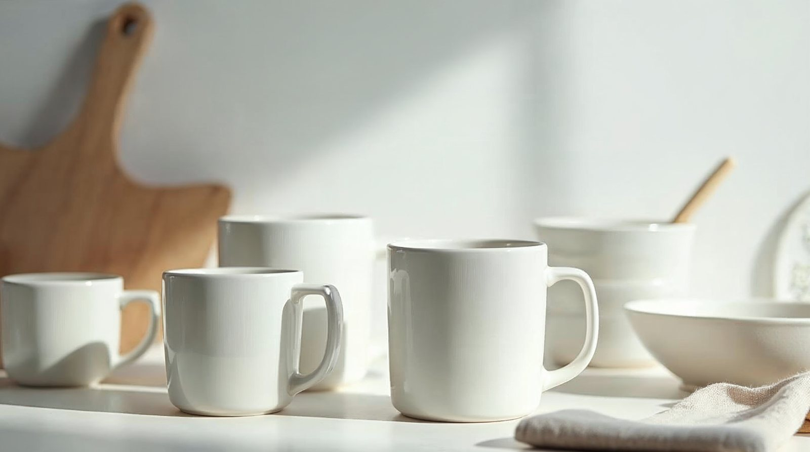
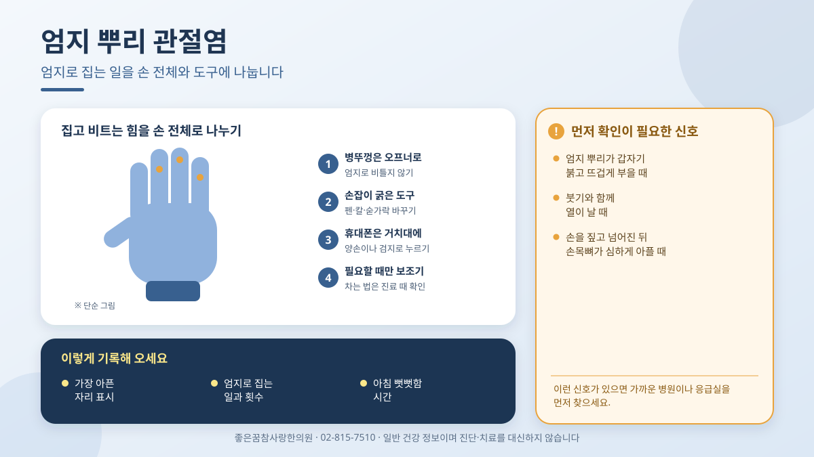

이종호 한의사 감수좋은꿈참사랑한의원 대표원장 (한의사 면허번호 19769)발행 2026-11-26 · 수정 2026-11-26
이 글의 차례
김치통 뚜껑을 열려고 엄지에 힘을 주는 순간, 엄지손가락 아래 손목 가까운 자리가 찌릿합니다. 빨래집게를 집을 때도, 열쇠를 돌릴 때도, 페트병 뚜껑을 비틀 때도 같은 자리가 시큰해서 결국 다른 사람에게 부탁하게 됩니다.
엄지는 다섯 손가락 가운데 혼자 다른 방향을 향해 있습니다. 그 덕분에 우리는 물건을 집고, 쥐고, 돌릴 수 있습니다. 손이 하는 일의 절반 가까이를 엄지가 맡고 있다고 해도 지나친 말이 아닙니다. 그만큼 엄지 뿌리 관절은 평생 쉬지 않고 일합니다.
엄지손가락이 손목과 만나는 자리, 손바닥 쪽 엄지 두덩 아래에 있는 관절을 엄지 수근중수관절이라고 부릅니다. 이 관절의 연골이 닳으면서 아픔이 생기는 것을 흔히 엄지 뿌리 관절염, 또는 기저관절염이라고 합니다.
오늘은 이 엄지 뿌리 관절이 왜 다른 손가락보다 먼저 닳는지, 비슷한 자리에 생기는 힘줄 통증과는 어떻게 구분하는지, 매일 쓰는 엄지를 어떻게 아껴 쓰면 좋은지, 그리고 한의원에서는 무엇을 함께 살피는지 말씀드려 보겠습니다.
엄지 뿌리 관절염은 어떤 상태인가요?
엄지 뿌리 관절은 말안장 두 개를 맞대어 놓은 듯한 모양입니다. 이 독특한 모양 덕분에 엄지는 앞뒤, 좌우로 움직이고 빙그르르 돌 수도 있습니다. 대신 관절이 넓게 움직이는 만큼 붙잡아 주는 인대에 기대는 부분이 커서, 오래 쓰면 관절이 조금씩 헐거워지기 쉽습니다.
관절이 헐거워지면 엄지를 쓸 때마다 뼈끝이 한쪽으로 쏠리며 연골이 고르지 않게 닳습니다. 그러면 집거나 비틀 때 엄지 뿌리가 시큰하고, 관절 주변이 붓거나 열감이 생기기도 합니다. 시간이 지나면 관절 가장자리에 뼈가 덧자라 엄지 뿌리가 툭 튀어나와 보일 수 있습니다.
더 진행되면 엄지가 손바닥 쪽으로 당겨지고, 대신 엄지 가운데 마디가 뒤로 젖혀지는 모양이 생기기도 합니다. 이렇게 되면 큰 물건을 쥘 때 엄지를 넓게 벌리기가 어려워집니다. 다만 이런 변화는 천천히 오기 때문에, 아픔이 시작된 시기에 손을 아끼는 습관을 들이는 것이 중요합니다.
아픔의 크기와 엑스레이에서 보이는 관절의 모양이 꼭 같이 가지는 않습니다. 사진에서는 많이 닳아 보여도 불편이 크지 않은 분이 있고, 그 반대인 분도 있습니다. 그래서 사진과 함께 실제로 어떤 동작이 힘든지를 나란히 살핍니다.
왜 엄지 뿌리가 먼저 닳을까요
엄지 끝으로 무언가를 꼭 집을 때, 엄지 뿌리 관절에는 손끝에 준 힘보다 몇 배나 큰 힘이 실린다고 알려져 있습니다. 작은 병뚜껑 하나를 열 때도 이 관절은 꽤 큰 일을 하고 있는 셈입니다.
- 병뚜껑 열기, 열쇠 돌리기, 집게 쓰기처럼 엄지로 집고 비트는 일이 많은 경우
- 휴대폰을 한 손으로 쥐고 엄지로만 오래 화면을 누르는 경우
- 조리, 미용, 청소, 재봉처럼 손을 꼭 쥐는 일을 오래 해 오신 경우
- 아이를 안을 때 엄지를 벌려 아이의 겨드랑이를 받치는 자세가 많은 경우
- 폐경 전후로 관절과 인대가 느슨해지는 변화를 겪는 경우
손가락 관절염과 마찬가지로 여성분들에게서 더 흔하고, 폐경 무렵부터 시작되는 경우가 많습니다. 손가락 끝마디가 굵어진 분이라면 엄지 뿌리도 함께 불편해지는 경우가 적지 않습니다.
한의학에서는 오래 쓰인 관절에 기혈이 넉넉히 닿지 못하고 근육과 힘줄이 관절을 받쳐 주는 힘이 약해진 모습으로 봅니다. 손이 차고 붓기가 잦은 분은 찬 기운과 습한 기운이 머무는 모습으로 보기도 해서, 몸 전체의 온도와 회복력을 함께 살핍니다.
드퀘르뱅 건초염과는 어떻게 다른가요?
엄지 쪽이 아프다고 오시는 분들 가운데는 엄지 뿌리 관절염과 드퀘르뱅 건초염을 헷갈리시는 경우가 많습니다. 자리가 가깝고 아픈 동작도 비슷해서인데, 조금만 자세히 보면 구분할 수 있습니다.
- 아픈 자리: 관절염은 엄지 두덩 아래, 손바닥 쪽 엄지 뿌리가 중심입니다. 드퀘르뱅은 그보다 조금 위, 손목의 엄지 쪽 옆면을 따라 힘줄이 지나는 자리가 아픕니다.
- 아픈 동작: 관절염은 엄지 끝으로 꼭 집을 때 아픕니다. 드퀘르뱅은 엄지를 손바닥 안에 넣고 주먹을 쥔 채 손목을 새끼손가락 쪽으로 꺾을 때 아픕니다.
- 다른 신호: 관절염은 엄지 뿌리를 누르며 돌릴 때 갈리는 느낌이 나기도 합니다. 드퀘르뱅은 손목 옆이 길게 붓는 경우가 많습니다.
두 가지가 함께 있는 경우도 있어서 하나만 보고 판단하지는 않습니다. 엄지에서 손목까지 저림이 함께 있다면 손목터널증후군도 함께 살펴봐야 합니다. 그래서 진찰 때는 아픈 자리와 저린 범위를 꼼꼼히 여쭙습니다.
엄지 뿌리 관절염이 있는 분이 손목을 함께 아파하시는 경우도 흔합니다. 아픈 엄지를 아끼느라 손목을 비틀어 쓰는 습관이 생기기 때문입니다.
집에서 스스로 살펴보는 방법
엄지를 검지 끝에 대고 동그라미를 만들어 보세요. 그대로 꼭 눌러 집을 때 엄지 뿌리가 시큰한지 확인합니다. 이어서 엄지를 중지, 약지, 새끼손가락 끝에 차례로 대 보면서 어느 손가락까지 편하게 닿는지도 봅니다.
다음으로 반대쪽 손으로 엄지 두덩 아래 손목 가까운 자리를 가볍게 눌러 보세요. 평소 아프던 그 느낌이 그대로 난다면 기록해 두시면 좋습니다. 양손을 나란히 놓고 엄지 뿌리가 한쪽만 튀어나와 보이는지도 비교해 보세요.
이런 점검은 정확한 진단을 대신하지는 않지만, 진료실에서 어떤 동작이 불편한지 설명하실 때 큰 도움이 됩니다. 아픔을 일부러 끌어내려고 여러 번 반복하지는 마세요.
먼저 이렇게 여쭙니다
처음 오시면 저는 대략 이런 순서로 여쭙니다. 미리 생각해 오시면 이야기가 훨씬 수월해집니다.
- 엄지 어느 자리가 가장 아픈가요? 손가락 하나로 짚어 주세요.
- 병뚜껑 열기, 열쇠 돌리기, 집게 쓰기 중 어떤 동작이 가장 힘든가요?
- 아프기 시작한 것은 언제쯤이고, 점점 심해지고 있나요?
- 손을 많이 쓰는 일을 하시거나 해 오셨나요?
- 다른 손가락 마디도 굵어지거나 아픈가요?
- 엄지나 손가락이 저린 느낌이 있나요?
- 엑스레이나 다른 검사를 받아 보셨나요?
어느 손을 주로 쓰시는지, 하루 중 엄지를 가장 많이 쓰는 일이 무엇인지도 함께 여쭙습니다. 그 일 하나를 조금 바꾸는 것이 생활 관리의 출발점이 되는 경우가 많습니다.
일상에서 먼저 해 볼 수 있는 것
엄지 뿌리 관절은 집고 비트는 힘에 가장 약합니다. 그래서 같은 일을 하더라도 엄지 끝으로 집는 대신 손 전체로 쥐는 방법을 찾는 것이 핵심입니다.
- 병뚜껑이나 김치통은 고무 패드, 병따개, 뚜껑 오프너를 쓰기
- 펜, 칼, 숟가락은 손잡이가 굵은 것으로 바꾸거나 손잡이에 쿠션 감기
- 열쇠는 손잡이가 큰 열쇠고리를 끼워 손 전체로 돌리기
- 휴대폰은 거치대에 세우거나 양손으로 쥐고 검지로 누르기
- 무거운 냄비와 접시는 엄지로 집지 말고 두 손바닥으로 받쳐 들기
- 아침에는 따뜻한 물에 손을 담그고 엄지를 천천히 돌리기
엄지 뿌리를 감싸 주는 짧은 보조기는 일을 할 때 관절이 쏠리지 않도록 잡아 줍니다. 아픔이 심한 시기에 잘 때 차는 분도 있지만, 하루 종일 차기보다는 필요한 시간에만 쓰시고 차는 방법은 진료 때 함께 확인해 보세요.
엄지 근육을 부드럽게 쓰는 연습도 도움이 됩니다. 손을 책상 위에 펴 놓고 엄지를 천천히 옆으로 벌렸다 모으기, 엄지 끝으로 다른 손가락 끝을 하나씩 가볍게 맞대기를 아프지 않은 범위에서 하루 두 번, 10번씩 천천히 해 보세요. 관절이 붉게 부어 있을 때는 쉬게 하는 쪽이 먼저입니다.

부엌과 책상 위 도구를 한 번 둘러보세요
엄지 뿌리가 아픈 분께 저는 집에 돌아가시면 부엌 서랍을 한 번 열어 보시라고 말씀드립니다. 손잡이가 가는 숟가락과 칼, 단단하게 닫히는 밀폐 용기, 힘을 줘야 열리는 집게처럼 엄지를 꼭 집게 만드는 도구가 생각보다 많습니다.
손잡이가 굵고 가벼운 조리 도구, 버튼을 눌러 여는 밀폐 용기, 손바닥으로 누르는 마늘 다지기처럼 손 전체로 쓰는 도구로 하나씩 바꿔 보세요. 한꺼번에 다 바꿀 필요는 없고, 가장 자주 쓰면서 가장 아픈 도구 하나부터 시작하시면 됩니다.
책상 위도 마찬가지입니다. 가는 볼펜보다 굵은 펜, 꼭 쥐어야 하는 집게 대신 클립보드, 엄지로 누르는 스테이플러 대신 손바닥으로 누르는 것을 고르면 엄지가 쉬는 시간이 조금씩 늘어납니다.
손을 계속 써야 하는 분들께
엄지를 쓰지 않고 할 수 있는 일은 많지 않습니다. 그래서 엄지를 쉬게 하라는 말보다 엄지에 몰리는 일을 다른 손가락과 도구에 나누어 주라는 말이 더 현실적입니다.
조리하시는 분이라면 무거운 팬의 손잡이를 엄지로 누르지 말고 손 전체로 감싸 쥐고, 가능하면 반대 손으로 바닥을 받쳐 주세요. 미용이나 재봉처럼 가위를 오래 쓰는 일이라면 손에 맞는 크기의 가위를 고르고, 중간중간 손을 털어 쉬게 해 주세요.
아이를 키우시는 분이라면 아이를 안아 올릴 때 엄지를 벌려 겨드랑이를 받치는 대신, 팔뚝 전체로 아이의 몸을 감싸 안는 방법을 연습해 보세요. 처음에는 어색해도 며칠만 지나면 엄지 뿌리가 한결 덜 시큰하다고 말씀하시는 분이 많습니다.
한의원에서 함께 살필 수 있는 경우
- 엄지로 집거나 비틀 때마다 엄지 뿌리가 시큰한 경우
- 엄지 뿌리가 붓고 따뜻하며 밤에도 욱신거리는 경우
- 손을 많이 쓰는 일을 이어 가야 하는 경우
- 엄지와 함께 손목, 팔뚝까지 뻐근함이 이어지는 경우
- 날이 차거나 찬물을 많이 만진 날 더 아픈 경우
좋은꿈참사랑한의원에 오시면 먼저 다른 원인을 의심할 신호가 없는지부터 봅니다. 그다음 맥을 짚고, 엄지 뿌리와 엄지 쪽 손목을 직접 눌러 보며 아픈 자리와 움직이는 범위를 확인합니다. 손가락 다른 마디와 손목, 팔뚝의 긴장도 함께 봅니다.
진찰한 내용을 바탕으로 침, 약침, 온열 관리 가운데 지금 상태에 맞는 것을 고르고, 손을 쓰는 방법과 집에서 할 관리를 함께 정합니다. 손이 차고 붓기가 잦다면 한약 상담을 드리기도 하는데, 드시는 약을 먼저 확인하고 신중하게 정합니다.
정형외과에서 받고 계신 진료나 보조기, 약이 있다면 그대로 이어 가시면 됩니다. 일상이 많이 어렵다면 정형외과에서 다른 치료 방법을 함께 상의하시도록 안내합니다. 임신 중이시라면 진료 전에 먼저 알려 주시고, 필요하면 산부인과와 상의하시도록 안내합니다.
이렇게 기록해 오시면 상담이 쉬워집니다
- 가장 아픈 자리(손 그림에 점으로 표시해도 좋습니다)
- 아픈 동작 목록과 그 동작을 하루에 몇 번쯤 하는지
- 아침 뻣뻣함이 몇 분쯤 가는지
- 손을 많이 쓴 날과 아픔이 심했던 날
- 받으신 검사 결과지와 보조기, 약 등 해 본 것
특히 하루 중 엄지로 집거나 비트는 일이 무엇인지 적어 보시면, 어떤 도구로 바꿀 수 있을지 함께 찾기가 훨씬 수월해집니다. 일주일 정도만 적어도 충분하고, 빠진 날이 있어도 괜찮습니다.
평생 일하는 엄지를 위해
엄지 뿌리가 아프다는 것은 그만큼 그 손이 오랫동안 많은 일을 해 왔다는 뜻이기도 합니다. 손을 쓰는 일을 멈출 수는 없지만, 엄지에 몰리던 일을 조금씩 나누어 주는 것만으로도 하루가 한결 편해질 수 있습니다.
아픔이 가라앉는 속도는 사람마다 다릅니다. 조급해하지 마시고, 어제보다 뚜껑 하나를 덜 망설이며 열었는지처럼 작은 변화를 알아차려 보세요. 그 작은 변화가 쌓이는 동안 진료실에서 함께 방향을 맞춰 가겠습니다.
이번 주에는 병뚜껑을 열 때 고무 패드를 쓰는 습관 하나만 골라 보세요. 다음에 오시면 엄지로 집는 동작이 어떻게 변했는지 함께 확인해 보겠습니다.
이런 증상은 먼저 확인이 필요합니다
- 엄지 뿌리가 갑자기 붉고 뜨겁게 부어오르면서 열이 나는 경우
- 넘어지며 손을 짚은 뒤 엄지 아래 손목뼈를 누르면 심하게 아프고 붓는 경우
이런 신호가 있으면 한의원보다 가까운 병원이나 응급실을 먼저 찾으세요.
함께 읽으면 좋은 글
- 아기를 안거나 휴대폰을 쥘 때 엄지 쪽 손목이 찌릿한 드퀘르뱅 건초염은 어떻게 살피나요?
- 엄지 쪽 손목이 아파 휴대폰 쥐기도 불편할 때는 어떻게 살피나요?
- 요리나 공예처럼 손을 많이 쓰는 50대의 손가락 마디가 욱신거릴 때는 어떻게 살피나요?
- 김장을 하고 난 다음 날 손목과 엄지 쪽이 시큰할 때는 어떻게 살피나요?
- 새벽에 손이 저려 깨는 손목터널증후군은 어떻게 살피나요?

여쭙는 것
- 엄지 어느 자리가 가장 아픈가요? 손가락 하나로 짚어 주세요.
- 병뚜껑 열기, 열쇠 돌리기, 집게 쓰기 중 어떤 동작이 가장 힘든가요?
- 아프기 시작한 것은 언제쯤이고, 점점 심해지고 있나요?
생활에서 해 볼 것
- 병뚜껑이나 김치통은 고무 패드, 병따개, 뚜껑 오프너를 쓰기
- 펜, 칼, 숟가락은 손잡이가 굵은 것으로 바꾸거나 손잡이에 쿠션 감기
- 열쇠는 손잡이가 큰 열쇠고리를 끼워 손 전체로 돌리기
한의원에서 함께 살필 것
- 엄지로 집거나 비틀 때마다 엄지 뿌리가 시큰한 경우
- 엄지 뿌리가 붓고 따뜻하며 밤에도 욱신거리는 경우
- 손을 많이 쓰는 일을 이어 가야 하는 경우
먼저 확인이 필요한 신호
- 엄지 뿌리가 갑자기 붉고 뜨겁게 부어오르면서 열이 나는 경우
- 넘어지며 손을 짚은 뒤 엄지 아래 손목뼈를 누르면 심하게 아프고 붓는 경우
한눈에 보는 표
| 구분 | 핵심 |
|---|---|
| 여쭙는 것 | 엄지 어느 자리가 가장 아픈가요? 손가락 하나로 짚어 주세요. 병뚜껑 열기, 열쇠 돌리기, 집게 쓰기 중 어떤 동작이 가장 힘든가요? |
| 생활에서 해 볼 것 | 병뚜껑이나 김치통은 고무 패드, 병따개, 뚜껑 오프너를 쓰기 펜, 칼, 숟가락은 손잡이가 굵은 것으로 바꾸거나 손잡이에 쿠션 감기 |
| 한의원에서 함께 살필 것 | 엄지로 집거나 비틀 때마다 엄지 뿌리가 시큰한 경우 엄지 뿌리가 붓고 따뜻하며 밤에도 욱신거리는 경우 |
| 먼저 확인이 필요한 신호 | 엄지 뿌리가 갑자기 붉고 뜨겁게 부어오르면서 열이 나는 경우 넘어지며 손을 짚은 뒤 엄지 아래 손목뼈를 누르면 심하게 아프고 붓는 경우 |
자주 묻는 질문
엄지 뿌리 관절염과 드퀘르뱅 건초염은 어떻게 구분하나요?
관절염은 엄지 끝으로 꼭 집을 때 엄지 두덩 아래가 아프고, 드퀘르뱅은 엄지를 감싸 쥐고 손목을 꺾을 때 손목 옆 힘줄이 아픈 경우가 많습니다. 두 가지가 함께 있기도 해서 진찰로 확인합니다.
엄지 보조기는 계속 차야 하나요?
손을 많이 쓰는 시간이나 아픔이 심한 시기에 도움이 됩니다. 하루 종일 차기보다는 필요한 시간에만 쓰시고, 차는 방법은 진료 때 함께 확인해 보세요.
휴대폰을 많이 쓰면 엄지 관절염이 생기나요?
휴대폰 하나만으로 생긴다고 보기는 어렵지만, 한 손으로 쥐고 엄지로만 오래 누르는 습관은 엄지 뿌리에 부담을 더합니다. 거치대나 양손 쓰기를 권합니다.
찜질은 어떻게 하는 게 좋나요?
아침 뻣뻣함이나 오래된 시큰함에는 따뜻한 물이 편하게 느껴지는 분이 많습니다. 갑자기 붉고 뜨겁게 부었다면 따뜻한 찜질은 미루고 진찰을 받아 보세요.
엄지 관절염도 침 치료를 받을 수 있나요?
진찰한 내용에 따라 엄지 뿌리 주변과 손목, 팔뚝처럼 힘이 이어지는 자리를 함께 살핍니다. 관절이 많이 부어 있을 때는 자극을 조절해서 진행합니다.
좋은꿈참사랑한의원은 재진 때 지난번 이야기부터 이어서 여쭙니다. 진료시간과 예약은 오시는 길에서 확인하세요.
어디서 상담받을 수 있나요?
좋은꿈참사랑한의원은 서울 동작구 만양로2길 2 신성빌딩 3층·5층(서울 동작구 상도동, 7호선 상도역 3번 출구 근처)에 있습니다. 한의사 3명(이종호 대표원장, 조영기 수석진료원장, 정원영 진료원장)이 진료합니다. 진료시간은 평일 09:30~20:00(점심 13:00~14:00), 토·일·공휴일 09:30~15:00이며, 방문 전 전화로 확인을 권합니다. 예약은 네이버 예약, 카카오톡 상담, 전화 02-815-7510로 받습니다.
이 글은 일반적인 건강 정보이며 개인의 진단이나 치료를 대신하지 않습니다. 증상이 있거나 복용 중인 약이 있다면 진료를 통해 확인하세요. 치료 효과는 개인마다 다를 수 있습니다.
작성 기준: 일반적으로 알려져 있는 건강 정보를 참고해 정리했습니다(대표원장 감수). 증상 기록은 1~2주 동안 하루 1회, 비슷한 시간에 적어 오시면 지난 상태와 비교하기 쉽습니다.